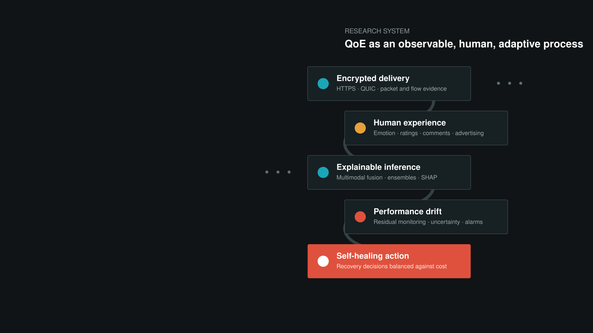
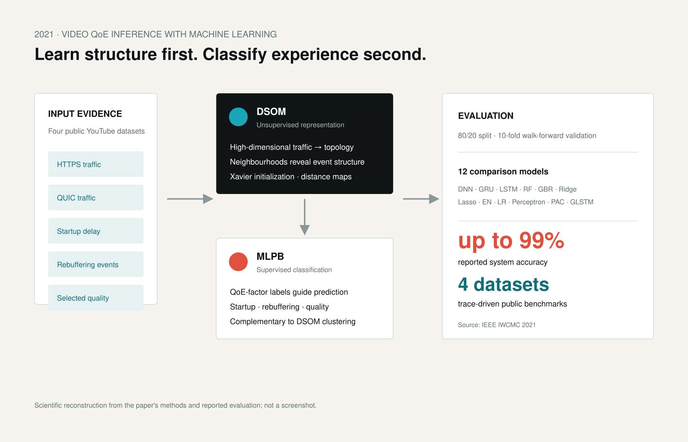
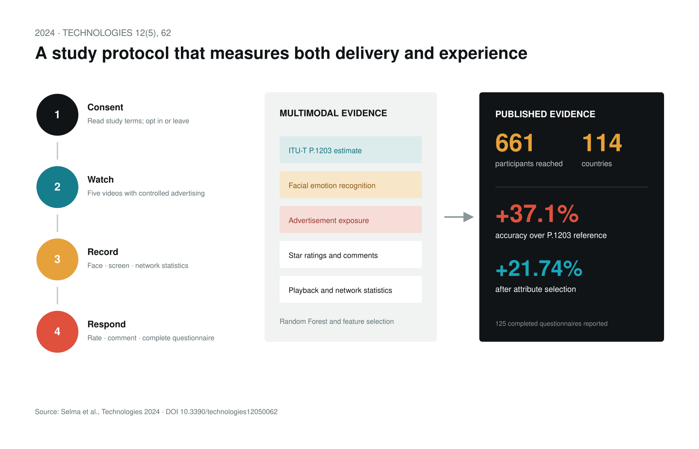
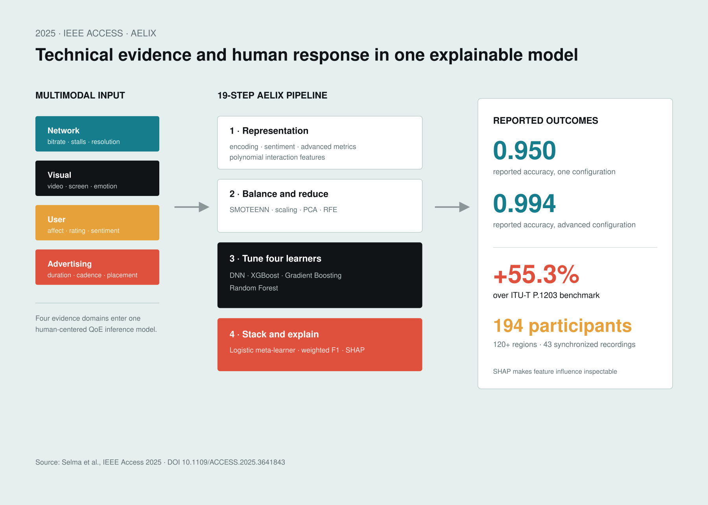
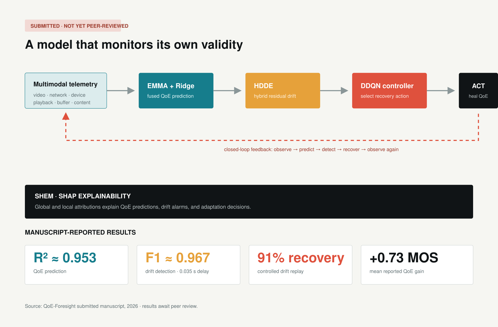

QoE-Foresight: Performance-Aware Drift Detection and Self-Healing for Adaptive Video Streaming QoE Prediction Systems
Tisa Selma, Mohammad Mehedy Masud, Saad Harous · Submitted manuscript

Computer Science · Human-centered AI · Networked multimedia
Making encrypted streaming observable, human experience measurable, and machine-learning systems accountable when conditions change.
Research map reconstructed from the published program and submitted QoE-Foresight manuscript
01 / Research thesis
It is a changing relationship among network delivery, playback behavior, visual quality, device state, advertising, emotion, and human judgment.
My research develops machine-learning methods that recover this relationship without reading encrypted payloads. The work progresses from network-layer inference, to multimodal human-centered assessment, to systems that detect their own performance drift and select corrective action.
2020 · IEEE IWCMC
The central theory is an observability argument: encrypted payloads hide content, but network and transport behavior still carries enough structure to infer startup delay, stalls, and selected bitrate.
01
Capture packet-header, flow, timing, and network/transport features while YouTube streams over HTTPS and QUIC.
02
Use information-gain attribute evaluation to reduce feature count while preserving useful signal.
03
Compare classifiers for selected bitrate, startup delay, and stalls; evaluate both full- and reduced-feature modes.
Source: Inferring Quality of Experience for Adaptive Video Streaming over HTTPS and QUIC, IEEE IWCMC 2020. Research supported by UAEU Grant 31T102-UPAR-1-2017.
2021 · IEEE IWCMC · DOI 10.1109/IWCMC51323.2021.9498579
The study combines Deep Self-Organizing Maps for unsupervised clustering with Multi-Layer Perceptron Backpropagation for supervised classification. Twelve comparison models were evaluated over four public YouTube-based datasets.

2024 · Technologies 12(5), 62
Network measurements alone cannot explain how a viewer experiences interruptions or advertising. This framework combines ITU-T P.1203, facial-emotion recognition, advertisements, star ratings, comments, and streaming statistics.

Selma, Masud, Bentaleb & Harous (2024). DOI 10.3390/technologies12050062 ↗ Funded by UAEU-ADU Joint Research Grant 12T041.
2025 · IEEE Access 13, 213886–213909
AELIX formalizes QoE as a multimodal function of network conditions, visual signals, user affect, and advertising exposure. Its 19-step pipeline encodes categorical variables, generates advanced engagement metrics, balances classes with SMOTEENN, tunes four base learners, stacks their predictions, and explains feature influence with SHAP.

Submitted manuscript · results not yet peer-reviewed
2026 · QoE-Foresight
QoE-Foresight treats model degradation as a control problem. EMMA fuses multimodal evidence; a Ridge predictor estimates QoE; HDDE monitors residual drift; a Double Deep Q-Network selects recovery actions; and SHAP explains both predictions and interventions.
The current manuscript reports an 813-sample fused benchmark, R² ≈ 0.953 for QoE prediction, HDDE F1 ≈ 0.967 with 0.035 s mean detection delay, and a 91% recovery-success rate with a mean gain of +0.73 MOS under controlled drift replay. These values are manuscript results and are labeled accordingly.
Open research repository ↗
02 / Publications
Tisa Selma, Mohammad Mehedy Masud, Saad Harous · Submitted manuscript
IEEE Access, 13, 213886–213909 · DOI 10.1109/ACCESS.2025.3641843
Technologies, 12(5), 62 · DOI 10.3390/technologies12050062
IEEE IWCMC · DOI 10.1109/IWCMC51323.2021.9498579
IEEE International Wireless Communications and Mobile Computing
Journal of Korea Multimedia Society · Medical image processing
Early network-systems study listed in the updated CV
03 / Achievements
Every item below is grounded in the supplied CV, credentials, publications, or dated recommendation letters.
Verified capabilities
Python · TensorFlow · TensorFlow.js · Keras · scikit-learn · OpenCV · MATLAB · Weka · Random Forest · ensemble learning · clustering · classification · regression
HTTP adaptive streaming · HTTPS and QUIC traffic · ITU-T P.1203 · playback and buffer analysis · video quality · facial-emotion recognition · user engagement
Multimodal fusion · medical-image segmentation · image enhancement · digital imaging · 3D visualization · Adobe After Effects · Canva
Hadoop · Spark · GraphX · MLlib · Spark Streaming · Scala · graph analytics · statistical analysis · data modeling
C/C++ · JavaScript · PHP · Node.js · Express · Angular · React · Ruby on Rails · Swift · Flask · Streamlit · AWS · Azure · Google Cloud · IBM Watson Studio
Oracle · MySQL · Firebase · Neo4j · Microsoft Access · MongoDB Atlas · IBM DB2 · Linux SUSE · BackTrack · Red Hat
04 / Recognition
“Best among the fellow students of our department between 2013 and 2015.”
“Consistently performed her duties with competence and often goes the extra mile.”
The letters describe Tisa as independent, creative, hardworking, committed, inquisitive, and an excellent problem solver. Excerpts are short and attributed; the original letters are not published here because they contain personal contact information.
05 / Evidence register
2020 and 2021 IEEE IWCMC papers; 2024 Technologies article; 2025 IEEE Access article; 2016 Journal of Korea Multimedia Society article.
QoE-Foresight is labeled submitted. Its results are reported as manuscript findings, not established peer-reviewed claims.
Degree certificates and equivalencies, CV, publication PDFs, grant acknowledgments, and two dated recommendation letters.
Postdoctoral research · interdisciplinary collaboration · reliable human-centered AI